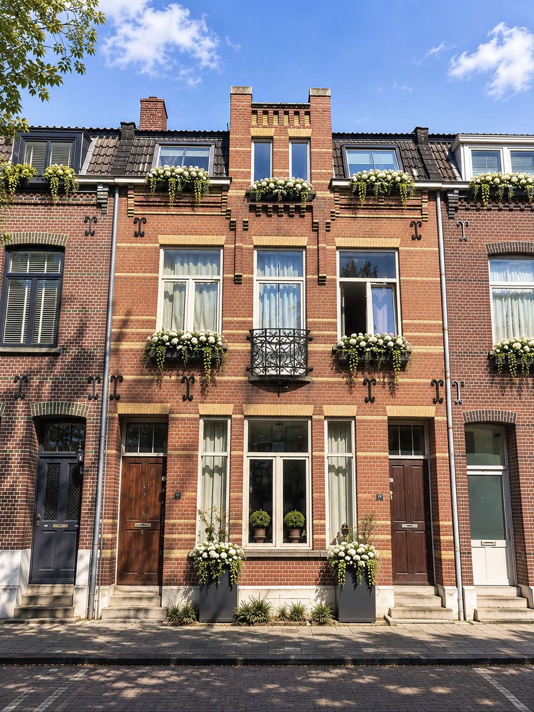
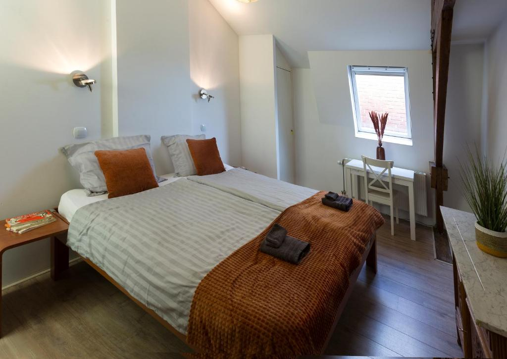
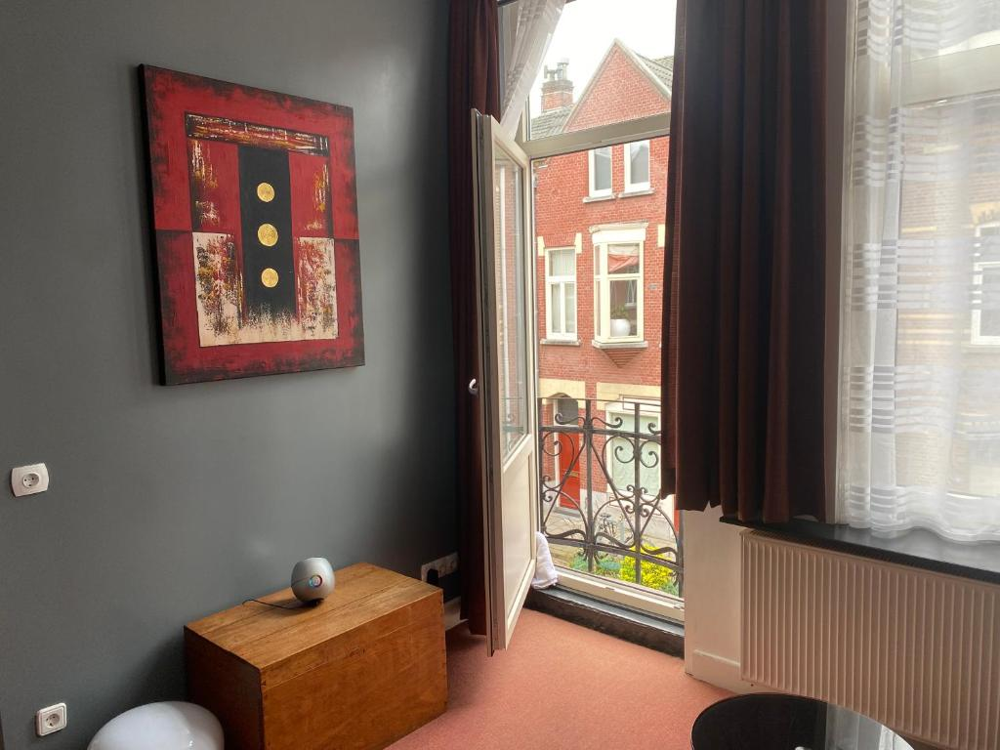
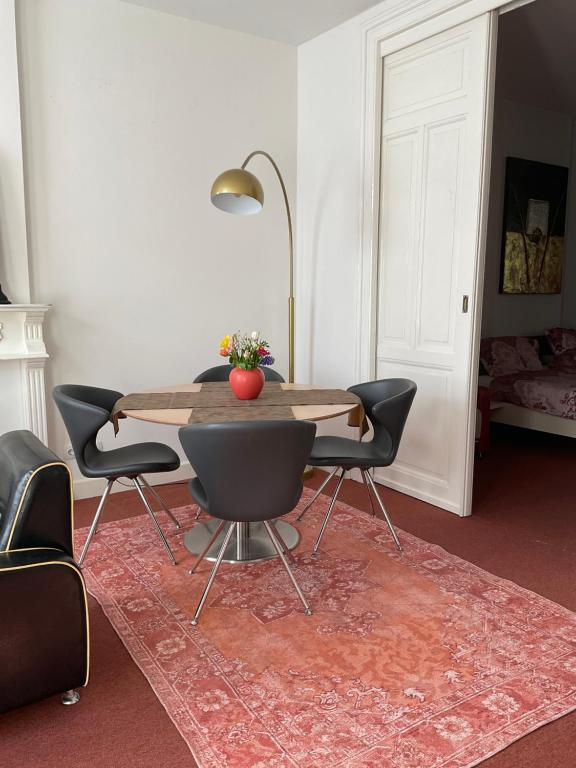

Appartementen in Venlo
Kies uw short stay appartement in Venlo. Beide verblijven hebben een eigen ingang, koffiemachine, flatscreen-tv, gratis WiFi en stadsuitzicht. U bent op loopafstand van het centrum. Pretpark Toverland ligt op ongeveer 20 km.






Appartement 1
Een ruim appartement met een aparte woonkamer en een aparte slaapkamer. U kookt in de goed uitgeruste keuken en ontspant in de zithoek met flatscreen-tv, met uitzicht over Venlo.
- Slaapplaatsen
- 2 bedden
- Kamers
- 1 woonkamer, 1 slaapkamer
- Badkamer
- 1, met bad en gratis toiletartikelen
- Keuken
- Goed uitgerust
Voorzieningen
- Kookplaat
- Koelkast
- Vaatwasser
- Keukengerei
- Koffiemachine
- Flatscreen-tv
- Gratis WiFi




Appartement 2
Een ruime kamer met eigen ingang, eetgedeelte en bank. Ideaal voor een korte stedentrip of zakelijk verblijf in Venlo, met toegang tot een goed uitgeruste keuken.
- Slaapplaatsen
- 2 bedden
- Kamers
- 1 kamer met zit- en eetgedeelte
- Badkamer
- 1, met bad en douche
- Keuken
- Goed uitgerust
Voorzieningen
- Koffiemachine
- Eetgedeelte
- Bank
- Flatscreen-tv
- Keuken
- Gratis WiFi
Vragen over uw verblijf in Venlo?
Neem gerust contact met ons op voor informatie over de appartementen.
Contact opnemen